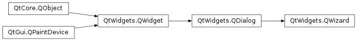
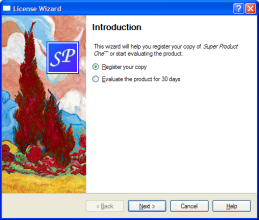
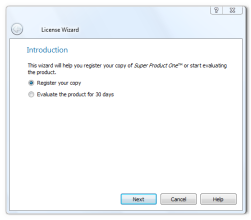

QWizard¶
Synopsis¶
Functions¶
- def
addPage(page) - def
button(which) - def
buttonText(which) - def
currentId() - def
currentPage() - def
field(name) - def
hasVisitedPage(id) - def
options() - def
page(id) - def
pageIds() - def
pixmap(which) - def
removePage(id) - def
setButton(which, button) - def
setButtonLayout(layout) - def
setButtonText(which, text) - def
setDefaultProperty(className, property, changedSignal) - def
setField(name, value) - def
setOption(option[, on=true]) - def
setOptions(options) - def
setPage(id, page) - def
setPixmap(which, pixmap) - def
setSideWidget(widget) - def
setStartId(id) - def
setSubTitleFormat(format) - def
setTitleFormat(format) - def
setWizardStyle(style) - def
sideWidget() - def
startId() - def
subTitleFormat() - def
testOption(option) - def
titleFormat() - def
visitedPages() - def
wizardStyle()
Virtual functions¶
- def
cleanupPage(id) - def
initializePage(id) - def
nextId() - def
validateCurrentPage()
Signals¶
- def
currentIdChanged(id) - def
customButtonClicked(which) - def
helpRequested() - def
pageAdded(id) - def
pageRemoved(id)
Detailed Description¶
The
PySide2.QtWidgets.QWizardclass provides a framework for wizards.A wizard (also called an assistant on macOS ) is a special type of input dialog that consists of a sequence of pages. A wizard’s purpose is to guide the user through a process step by step. Wizards are useful for complex or infrequent tasks that users may find difficult to learn.
PySide2.QtWidgets.QWizardinheritsPySide2.QtWidgets.QDialogand represents a wizard. Each page is aPySide2.QtWidgets.QWizardPage(aPySide2.QtWidgets.QWidgetsubclass). To create your own wizards, you can use these classes directly, or you can subclass them for more control.Topics:
A Trivial Example¶
The following example illustrates how to create wizard pages and add them to a wizard. For more advanced examples, see Class Wizard and License Wizard .
def createIntroPage(self): page = QWizardPage() page.setTitle("Introduction") label = QLabel("This wizard will help you register your copy of Super Product Two.") label.setWordWrap(True) layout = QVBoxLayout() layout.addWidget(label) page.setLayout(layout) return page QWizardPage *createRegistrationPage() ... def createConclusionPage(self): ... def main(): app = QApplication(sys.argv) translatorFileName = "qt_" translatorFileName += QLocale.system().name() translator = QTranslator(app) if translator.load(translatorFileName, QLibraryInfo.location(QLibraryInfo.TranslationsPath)): app.installTranslator(translator) wizard = QWizard() wizard.addPage(createIntroPage()) wizard.addPage(createRegistrationPage()) wizard.addPage(createConclusionPage()) wizard.setWindowTitle("Trivial Wizard") wizard.show() return app.exec_() if __name__ == "__main__": main()
Wizard Look and Feel¶
PySide2.QtWidgets.QWizardsupports four wizard looks:
ClassicStyleModernStyleMacStyleAeroStyleYou can explicitly set the look to use using
PySide2.QtWidgets.QWizard.setWizardStyle()(e.g., if you want the same look on all platforms).
ClassicStyleModernStyleMacStyleAeroStyle  Note:
AeroStylehas effect only on a Windows Vista system with alpha compositing enabled.ModernStyleis used as a fallback when this condition is not met.In addition to the wizard style, there are several options that control the look and feel of the wizard. These can be set using
PySide2.QtWidgets.QWizard.setOption()orPySide2.QtWidgets.QWizard.setOptions(). For example,HaveHelpButtonmakesPySide2.QtWidgets.QWizardshow a Help button along with the other wizard buttons.You can even change the order of the wizard buttons to any arbitrary order using
PySide2.QtWidgets.QWizard.setButtonLayout(), and you can add up to three custom buttons (e.g., a Print button) to the button row. This is achieved by callingPySide2.QtWidgets.QWizard.setButton()orPySide2.QtWidgets.QWizard.setButtonText()withCustomButton1,CustomButton2, orCustomButton3to set up the button, and by enabling theHaveCustomButton1,HaveCustomButton2, orHaveCustomButton3options. Whenever the user clicks a custom button,PySide2.QtWidgets.QWizard.customButtonClicked()is emitted. For example:self.wizard().setButtonText(QWizard.CustomButton1, self.tr("&Print")) self.wizard().setOption(QWizard.HaveCustomButton1, True) self.connect(wizard(), SIGNAL("customButtonClicked(int)"), self, SLOT("printButtonClicked()"))


Elements of a Wizard Page¶
Wizards consist of a sequence of
PySide2.QtWidgets.QWizardPages. At any time, only one page is shown. A page has the following attributes:The diagram belows shows how
PySide2.QtWidgets.QWizardrenders these attributes, assuming they are all present andModernStyleis used:
When a
PySide2.QtWidgets.QWizardPage.subTitle()is set,PySide2.QtWidgets.QWizarddisplays it in a header, in which case it also uses theBannerPixmapand theLogoPixmapto decorate the header. TheWatermarkPixmapis displayed on the left side, below the header. At the bottom, there is a row of buttons allowing the user to navigate through the pages.The page itself (the
PySide2.QtWidgets.QWizardPagewidget) occupies the area between the header, the watermark, and the button row. Typically, the page is aPySide2.QtWidgets.QWizardPageon which aPySide2.QtWidgets.QGridLayoutis installed, with standard child widgets (PySide2.QtWidgets.QLabels,PySide2.QtWidgets.QLineEdits, etc.).If the wizard’s style is
MacStyle, the page looks radically different:
The watermark, banner, and logo pixmaps are ignored by the
MacStyle. If theBackgroundPixmapis set, it is used as the background for the wizard; otherwise, a default “assistant” image is used.The title and subtitle are set by calling
QWizardPage.setTitle()andQWizardPage.setSubTitle()on the individual pages. They may be plain text or HTML (seePySide2.QtWidgets.QWizard.titleFormat()andPySide2.QtWidgets.QWizard.subTitleFormat()). The pixmaps can be set globally for the entire wizard usingPySide2.QtWidgets.QWizard.setPixmap(), or on a per-page basis usingQWizardPage.setPixmap().
Registering and Using Fields¶
In many wizards, the contents of a page may affect the default values of the fields of a later page. To make it easy to communicate between pages,
PySide2.QtWidgets.QWizardsupports a “field” mechanism that allows you to register a field (e.g., aPySide2.QtWidgets.QLineEdit) on a page and to access its value from any page. It is also possible to specify mandatory fields (i.e., fields that must be filled before the user can advance to the next page).To register a field, call
QWizardPage.registerField()field. For example:class ClassInfoPage(QWizardPage): def __init__(self, parent): QWizardPage.__init__(self, parent) ... classNameLabel = QLabel(self.tr("&Class name:")) classNameLineEdit = QLineEdit() classNameLabel.setBuddy(classNameLineEdit) baseClassLabel = QLabel(self.tr("B&ase class:")) baseClassLineEdit = QLineEdit() baseClassLabel.setBuddy(baseClassLineEdit) qobjectMacroCheckBox = QCheckBox(self.tr("Generate Q_OBJECT ¯o")) registerField("className*", classNameLineEdit) registerField("baseClass", baseClassLineEdit) registerField("qobjectMacro", qobjectMacroCheckBox) ...The above code registers three fields,
className,baseClass, andqobjectMacro, which are associated with three child widgets. The asterisk (*) next toclassNamedenotes a mandatory field.The fields of any page are accessible from any other page. For example:
def initializePage(self): className = field("className") self.headerLineEdit.setText(className.lower() + ".h") self.implementationLineEdit.setText(className.lower() + ".cpp") self.outputDirLineEdit.setText(QDir.convertSeparators(QDir.tempPath()))Here, we call
QWizardPage.field()to access the contents of theclassNamefield (which was defined in theClassInfoPage) and use it to initialize theOutputFilePage. The field’s contents is returned as aPySide2.QtCore.QVariant.When we create a field using
QWizardPage.registerField(), we pass a unique field name and a widget. We can also provide a Qt property name and a “changed” signal (a signal that is emitted when the property changes) as third and fourth arguments; however, this is not necessary for the most common Qt widgets, such asPySide2.QtWidgets.QLineEdit,PySide2.QtWidgets.QCheckBox, andPySide2.QtWidgets.QComboBox, becausePySide2.QtWidgets.QWizardknows which properties to look for.If an asterisk (
*) is appended to the name when the property is registered, the field is a mandatory field . When a page has mandatory fields, the Next and/or Finish buttons are enabled only when all mandatory fields are filled.To consider a field “filled”,
PySide2.QtWidgets.QWizardsimply checks that the field’s current value doesn’t equal the original value (the value it had whenPySide2.QtWidgets.QWizard.initializePage()was called). ForPySide2.QtWidgets.QLineEditandPySide2.QtWidgets.QAbstractSpinBoxsubclasses,PySide2.QtWidgets.QWizardalso checks thatPySide2.QtWidgets.QLineEdit.hasAcceptableInput()returns true, to honor any validator or mask.
PySide2.QtWidgets.QWizard‘s mandatory field mechanism is provided for convenience. A more powerful (but also more cumbersome) alternative is to reimplementQWizardPage.isComplete()and to emit theQWizardPage.completeChanged()signal whenever the page becomes complete or incomplete.The enabled/disabled state of the Next and/or Finish buttons is one way to perform validation on the user input. Another way is to reimplement
PySide2.QtWidgets.QWizard.validateCurrentPage()(orQWizardPage.validatePage()) to perform some last-minute validation (and show an error message if the user has entered incomplete or invalid information). If the function returnstrue, the next page is shown (or the wizard finishes); otherwise, the current page stays up.
Creating Linear Wizards¶
Most wizards have a linear structure, with page 1 followed by page 2 and so on until the last page. The Class Wizard example is such a wizard. With
PySide2.QtWidgets.QWizard, linear wizards are created by instantiating thePySide2.QtWidgets.QWizardPages and inserting them usingPySide2.QtWidgets.QWizard.addPage(). By default, the pages are shown in the order in which they were added. For example:def __init__(self, parent): QWizard.__init__(self, parent): self.addPage(IntroPage()) self.addPage(ClassInfoPage()) self.addPage(CodeStylePage()) self.addPage(OutputFilesPage()) self.addPage(ConclusionPage()) ...When a page is about to be shown,
PySide2.QtWidgets.QWizardcallsPySide2.QtWidgets.QWizard.initializePage()(which in turn callsQWizardPage.initializePage()) to fill the page with default values. By default, this function does nothing, but it can be reimplemented to initialize the page’s contents based on other pages’ fields (see theexample above).If the user presses Back,
PySide2.QtWidgets.QWizard.cleanupPage()is called (which in turn callsQWizardPage.cleanupPage()). The default implementation resets the page’s fields to their original values (the values they had beforePySide2.QtWidgets.QWizard.initializePage()was called). If you want the Back button to be non-destructive and keep the values entered by the user, simply enable theIndependentPagesoption.
Creating Non-Linear Wizards¶
Some wizards are more complex in that they allow different traversal paths based on the information provided by the user. The License Wizard example illustrates this. It provides five wizard pages; depending on which options are selected, the user can reach different pages.

In complex wizards, pages are identified by IDs. These IDs are typically defined using an enum. For example:
class LicenseWizard (QWizard): ... Page_Intro = 1 Page_Evaluate = 2 Page_Register = 3 Page_Details = 4 Page_Conclusion = 5 ...The pages are inserted using
PySide2.QtWidgets.QWizard.setPage(), which takes an ID and an instance ofPySide2.QtWidgets.QWizardPage(or of a subclass):# class LicenseWizard def __init__(self, parent) QWizard(self, parent) self.setPage(self.Page_Intro, IntroPage()) self.setPage(self.Page_Evaluate, EvaluatePage()) self.setPage(self.Page_Register, RegisterPage()) self.setPage(self.Page_Details, DetailsPage()) self.setPage(self.Page_Conclusion, ConclusionPage()) ... }By default, the pages are shown in increasing ID order. To provide a dynamic order that depends on the options chosen by the user, we must reimplement
QWizardPage.nextId(). For example:# class IntroPage def nextId(self): if evaluateRadioButton.isChecked(): return LicenseWizard.Page_Evaluate else: return LicenseWizard.Page_Register # class EvaluatePage def nextId(self): return LicenseWizard.Page_Conclusion # class RegisterPage def nextId(self): if self.upgradeKeyLineEdit.text().isEmpty(): return LicenseWizard::Page_Details else: return LicenseWizard::Page_Conclusion # class DetailsPage def nextId(self): return LicenseWizard.Page_Conclusion #class ConclusionPage def nextId(self): return -1It would also be possible to put all the logic in one place, in a
QWizard.nextId()reimplementation. For example:def nextId(self): id = self.currentId() if id == Page_Intro: if field("intro.evaluate").toBool(): return Page_Evaluate else: return Page_Register elif id == Page_Evaluate: return Page_Conclusion elif id == Page_Register: if field("register.upgradeKey").toString().isEmpty(): return Page_Details else: return Page_Conclusion elif id == Page_Details: return Page_Conclusion else: return -1To start at another page than the page with the lowest ID, call
PySide2.QtWidgets.QWizard.setStartId().To test whether a page has been visited or not, call
PySide2.QtWidgets.QWizard.hasVisitedPage(). For example:# class ConclusionPage def initializePage(self): if wizard().hasVisitedPage(LicenseWizard::Page_Evaluate): licenseText = self.tr("<u>Evaluation License Agreement:</u> " \ "You can use this software for 30 days and make one " \ "backup, but you are not allowed to distribute it.") elsif wizard().hasVisitedPage(LicenseWizard.Page_Details): licenseText = self.tr("<u>First-Time License Agreement:</u> " \ "You can use this software subject to the license " \ "you will receive by email.") else: licenseText = self.tr("<u>Upgrade License Agreement:</u> " \ "This software is licensed under the terms of your " \ "current license.") } bottomLabel.setText(licenseText)
-
class
PySide2.QtWidgets.QWizard([parent=nullptr[, flags=Qt.WindowFlags()]])¶ Parameters: - flags –
PySide2.QtCore.Qt.WindowFlags - parent –
PySide2.QtWidgets.QWidget
Constructs a wizard with the given
parentand windowflags.See also
- flags –
-
PySide2.QtWidgets.QWizard.WizardButton¶ This enum specifies the buttons in a wizard.
Constant Description QWizard.BackButton The Back button (Go Back on macOS ) QWizard.NextButton The Next button (Continue on macOS ) QWizard.CommitButton The Commit button QWizard.FinishButton The Finish button (Done on macOS ) QWizard.CancelButton The Cancel button (see also NoCancelButton)QWizard.HelpButton The Help button (see also HaveHelpButton)QWizard.CustomButton1 The first user-defined button (see also HaveCustomButton1)QWizard.CustomButton2 The second user-defined button (see also HaveCustomButton2)QWizard.CustomButton3 The third user-defined button (see also HaveCustomButton3)The following value is only useful when calling
PySide2.QtWidgets.QWizard.setButtonLayout():Constant Description QWizard.Stretch A horizontal stretch in the button layout
-
PySide2.QtWidgets.QWizard.WizardPixmap¶ This enum specifies the pixmaps that can be associated with a page.
Constant Description QWizard.WatermarkPixmap The tall pixmap on the left side of a ClassicStyleorModernStylepageQWizard.LogoPixmap The small pixmap on the right side of a ClassicStyleorModernStylepage headerQWizard.BannerPixmap The pixmap that occupies the background of a ModernStylepage headerQWizard.BackgroundPixmap The pixmap that occupies the background of a MacStylewizardSee also
PySide2.QtWidgets.QWizard.setPixmap()QWizardPage.setPixmap()Elements of a Wizard Page
-
PySide2.QtWidgets.QWizard.WizardStyle¶ This enum specifies the different looks supported by
PySide2.QtWidgets.QWizard.Constant Description QWizard.ClassicStyle Classic Windows look QWizard.ModernStyle Modern Windows look QWizard.MacStyle macOS look QWizard.AeroStyle Windows Aero look See also
PySide2.QtWidgets.QWizard.setWizardStyle()QWizard.WizardOptionWizard Look and Feel
-
PySide2.QtWidgets.QWizard.WizardOption¶ This enum specifies various options that affect the look and feel of a wizard.
Constant Description QWizard.IndependentPages The pages are independent of each other (i.e., they don’t derive values from each other). QWizard.IgnoreSubTitles Don’t show any subtitles, even if they are set. QWizard.ExtendedWatermarkPixmap Extend any WatermarkPixmapall the way down to the window’s edge.QWizard.NoDefaultButton Don’t make the Next or Finish button the dialog’s default button.QWizard.NoBackButtonOnStartPage Don’t show the Back button on the start page. QWizard.NoBackButtonOnLastPage Don’t show the Back button on the last page. QWizard.DisabledBackButtonOnLastPage Disable the Back button on the last page. QWizard.HaveNextButtonOnLastPage Show the (disabled) Next button on the last page. QWizard.HaveFinishButtonOnEarlyPages Show the (disabled) Finish button on non-final pages. QWizard.NoCancelButton Don’t show the Cancel button. QWizard.CancelButtonOnLeft Put the Cancel button on the left of Back (rather than on the right of Finish or Next). QWizard.HaveHelpButton Show the Help button. QWizard.HelpButtonOnRight Put the Help button on the far right of the button layout (rather than on the far left). QWizard.HaveCustomButton1 Show the first user-defined button ( CustomButton1).QWizard.HaveCustomButton2 Show the second user-defined button ( CustomButton2).QWizard.HaveCustomButton3 Show the third user-defined button ( CustomButton3).QWizard.NoCancelButtonOnLastPage Don’t show the Cancel button on the last page.
-
PySide2.QtWidgets.QWizard.addPage(page)¶ Parameters: page – PySide2.QtWidgets.QWizardPageReturn type: PySide2.QtCore.intAdds the given
pageto the wizard, and returns the page’s ID.The ID is guaranteed to be larger than any other ID in the
PySide2.QtWidgets.QWizardso far.
-
PySide2.QtWidgets.QWizard.back()¶ Goes back to the previous page.
This is equivalent to pressing the Back button.
Parameters: which – PySide2.QtWidgets.QWizard.WizardButtonReturn type: PySide2.QtWidgets.QAbstractButtonReturns the button corresponding to role
which.
Parameters: which – PySide2.QtWidgets.QWizard.WizardButtonReturn type: unicode Returns the text on button
which.If a text has ben set using
PySide2.QtWidgets.QWizard.setButtonText(), this text is returned.By default, the text on buttons depends on the
PySide2.QtWidgets.QWizard.wizardStyle(). For example, on macOS , the Next button is called Continue.
-
PySide2.QtWidgets.QWizard.cleanupPage(id)¶ Parameters: id – PySide2.QtCore.intThis virtual function is called by
PySide2.QtWidgets.QWizardto clean up pageidjust before the user leaves it by clicking Back (unless theQWizard.IndependentPagesoption is set).The default implementation calls
QWizardPage.cleanupPage()on page(id).
-
PySide2.QtWidgets.QWizard.currentId()¶ Return type: PySide2.QtCore.int
-
PySide2.QtWidgets.QWizard.currentIdChanged(id)¶ Parameters: id – PySide2.QtCore.int
-
PySide2.QtWidgets.QWizard.currentPage()¶ Return type: PySide2.QtWidgets.QWizardPageReturns a pointer to the current page, or 0 if there is no current page (e.g., before the wizard is shown).
This is equivalent to calling page(
PySide2.QtWidgets.QWizard.currentId()).
-
PySide2.QtWidgets.QWizard.customButtonClicked(which)¶ Parameters: which – PySide2.QtCore.int
-
PySide2.QtWidgets.QWizard.field(name)¶ Parameters: name – unicode Return type: object Returns the value of the field called
name.This function can be used to access fields on any page of the wizard.
-
PySide2.QtWidgets.QWizard.hasVisitedPage(id)¶ Parameters: id – PySide2.QtCore.intReturn type: PySide2.QtCore.boolReturns
trueif the page history contains pageid; otherwise, returnsfalse.Pressing Back marks the current page as “unvisited” again.
-
PySide2.QtWidgets.QWizard.helpRequested()¶
-
PySide2.QtWidgets.QWizard.initializePage(id)¶ Parameters: id – PySide2.QtCore.intThis virtual function is called by
PySide2.QtWidgets.QWizardto prepare pageidjust before it is shown either as a result ofQWizard.restart()being called, or as a result of the user clicking Next. (However, if theQWizard.IndependentPagesoption is set, this function is only called the first time the page is shown.)By reimplementing this function, you can ensure that the page’s fields are properly initialized based on fields from previous pages.
The default implementation calls
QWizardPage.initializePage()on page(id).
-
PySide2.QtWidgets.QWizard.next()¶ Advances to the next page.
This is equivalent to pressing the Next or Commit button.
-
PySide2.QtWidgets.QWizard.nextId()¶ Return type: PySide2.QtCore.intThis virtual function is called by
PySide2.QtWidgets.QWizardto find out which page to show when the user clicks the Next button.The return value is the ID of the next page, or -1 if no page follows.
The default implementation calls
QWizardPage.nextId()on thePySide2.QtWidgets.QWizard.currentPage().By reimplementing this function, you can specify a dynamic page order.
-
PySide2.QtWidgets.QWizard.options()¶ Return type: PySide2.QtWidgets.QWizard.WizardOptions
-
PySide2.QtWidgets.QWizard.page(id)¶ Parameters: id – PySide2.QtCore.intReturn type: PySide2.QtWidgets.QWizardPageReturns the page with the given
id, or 0 if there is no such page.
-
PySide2.QtWidgets.QWizard.pageAdded(id)¶ Parameters: id – PySide2.QtCore.int
-
PySide2.QtWidgets.QWizard.pageIds()¶ Return type: Returns the list of page IDs.
-
PySide2.QtWidgets.QWizard.pageRemoved(id)¶ Parameters: id – PySide2.QtCore.int
-
PySide2.QtWidgets.QWizard.pixmap(which)¶ Parameters: which – PySide2.QtWidgets.QWizard.WizardPixmapReturn type: PySide2.QtGui.QPixmapReturns the pixmap set for role
which.By default, the only pixmap that is set is the
BackgroundPixmapon macOS .See also
PySide2.QtWidgets.QWizard.setPixmap()QWizardPage.pixmap()Elements of a Wizard Page
-
PySide2.QtWidgets.QWizard.removePage(id)¶ Parameters: id – PySide2.QtCore.intRemoves the page with the given
id.PySide2.QtWidgets.QWizard.cleanupPage()will be called if necessary.Note
Removing a page may influence the value of the
PySide2.QtWidgets.QWizard.startId()property.
-
PySide2.QtWidgets.QWizard.restart()¶ Restarts the wizard at the start page. This function is called automatically when the wizard is shown.
See also
-
PySide2.QtWidgets.QWizard.setButton(which, button)¶ Parameters: - which –
PySide2.QtWidgets.QWizard.WizardButton - button –
PySide2.QtWidgets.QAbstractButton
Sets the button corresponding to role
whichtobutton.To add extra buttons to the wizard (e.g., a Print button), one way is to call with
CustomButton1toCustomButton3, and make the buttons visible using theHaveCustomButton1toHaveCustomButton3options.- which –
-
PySide2.QtWidgets.QWizard.setButtonLayout(layout)¶ Parameters: layout – Sets the order in which buttons are displayed to
layout, wherelayoutis a list ofQWizard.WizardButtons.The default layout depends on the options (e.g., whether
HelpButtonOnRight) that are set. You can call this function if you need more control over the buttons’ layout than whatPySide2.QtWidgets.QWizard.options()already provides.You can specify horizontal stretches in the layout using
Stretch.Example:
class MyWizard(QWizard): def __init__(self, parent): QWizard.__ini__(self, parent) ... layout = [QWizard.Stretch, QWizard.BackButton, QWizard.CancelButton, QWizard.NextButton, QWizard.FinishButton] setButtonLayout(layout); ...
-
PySide2.QtWidgets.QWizard.setButtonText(which, text)¶ Parameters: - which –
PySide2.QtWidgets.QWizard.WizardButton - text – unicode
Sets the text on button
whichto betext.By default, the text on buttons depends on the
PySide2.QtWidgets.QWizard.wizardStyle(). For example, on macOS , the Next button is called Continue.To add extra buttons to the wizard (e.g., a Print button), one way is to call with
CustomButton1,CustomButton2, orCustomButton3to set their text, and make the buttons visible using theHaveCustomButton1,HaveCustomButton2, and/orHaveCustomButton3options.Button texts may also be set on a per-page basis using
QWizardPage.setButtonText().- which –
-
PySide2.QtWidgets.QWizard.setDefaultProperty(className, property, changedSignal)¶ Parameters: - className – str
- property – str
- changedSignal – str
Sets the default property for
classNameto beproperty, and the associated change signal to bechangedSignal.The default property is used when an instance of
className(or of one of its subclasses) is passed toQWizardPage.registerField()and no property is specified.PySide2.QtWidgets.QWizardknows the most common Qt widgets. For these (or their subclasses), you don’t need to specify apropertyor achangedSignal. The table below lists these widgets:See also
-
PySide2.QtWidgets.QWizard.setField(name, value)¶ Parameters: - name – unicode
- value – object
Sets the value of the field called
nametovalue.This function can be used to set fields on any page of the wizard.
-
PySide2.QtWidgets.QWizard.setOption(option[, on=true])¶ Parameters: - option –
PySide2.QtWidgets.QWizard.WizardOption - on –
PySide2.QtCore.bool
Sets the given
optionto be enabled ifonis true; otherwise, clears the givenoption.- option –
-
PySide2.QtWidgets.QWizard.setOptions(options)¶ Parameters: options – PySide2.QtWidgets.QWizard.WizardOptionsSee also
-
PySide2.QtWidgets.QWizard.setPage(id, page)¶ Parameters: - id –
PySide2.QtCore.int - page –
PySide2.QtWidgets.QWizardPage
Adds the given
pageto the wizard with the givenid.Note
Adding a page may influence the value of the
PySide2.QtWidgets.QWizard.startId()property in case it was not set explicitly.- id –
-
PySide2.QtWidgets.QWizard.setPixmap(which, pixmap)¶ Parameters: - which –
PySide2.QtWidgets.QWizard.WizardPixmap - pixmap –
PySide2.QtGui.QPixmap
Sets the pixmap for role
whichtopixmap.The pixmaps are used by
PySide2.QtWidgets.QWizardwhen displaying a page. Which pixmaps are actually used depend on thewizard style.Pixmaps can also be set for a specific page using
QWizardPage.setPixmap().See also
PySide2.QtWidgets.QWizard.pixmap()QWizardPage.setPixmap()Elements of a Wizard Page- which –
-
PySide2.QtWidgets.QWizard.setSideWidget(widget)¶ Parameters: widget – PySide2.QtWidgets.QWidgetSets the given
widgetto be shown on the left side of the wizard. For styles which use theWatermarkPixmap(ClassicStyleandModernStyle) the side widget is displayed on top of the watermark, for other styles or when the watermark is not provided the side widget is displayed on the left side of the wizard.Passing 0 shows no side widget.
When the
widgetis not 0 the wizard reparents it.Any previous side widget is hidden.
You may call with the same widget at different times.
All widgets set here will be deleted by the wizard when it is destroyed unless you separately reparent the widget after setting some other side widget (or 0).
By default, no side widget is present.
-
PySide2.QtWidgets.QWizard.setStartId(id)¶ Parameters: id – PySide2.QtCore.intSee also
-
PySide2.QtWidgets.QWizard.setSubTitleFormat(format)¶ Parameters: format – PySide2.QtCore.Qt.TextFormat
-
PySide2.QtWidgets.QWizard.setTitleFormat(format)¶ Parameters: format – PySide2.QtCore.Qt.TextFormat
-
PySide2.QtWidgets.QWizard.setWizardStyle(style)¶ Parameters: style – PySide2.QtWidgets.QWizard.WizardStyle
-
PySide2.QtWidgets.QWizard.sideWidget()¶ Return type: PySide2.QtWidgets.QWidgetReturns the widget on the left side of the wizard or 0.
By default, no side widget is present.
-
PySide2.QtWidgets.QWizard.startId()¶ Return type: PySide2.QtCore.int
-
PySide2.QtWidgets.QWizard.subTitleFormat()¶ Return type: PySide2.QtCore.Qt.TextFormat
-
PySide2.QtWidgets.QWizard.testOption(option)¶ Parameters: option – PySide2.QtWidgets.QWizard.WizardOptionReturn type: PySide2.QtCore.boolReturns
trueif the givenoptionis enabled; otherwise, returns false.
-
PySide2.QtWidgets.QWizard.titleFormat()¶ Return type: PySide2.QtCore.Qt.TextFormat
-
PySide2.QtWidgets.QWizard.validateCurrentPage()¶ Return type: PySide2.QtCore.boolThis virtual function is called by
PySide2.QtWidgets.QWizardwhen the user clicks Next or Finish to perform some last-minute validation. If it returnstrue, the next page is shown (or the wizard finishes); otherwise, the current page stays up.The default implementation calls
QWizardPage.validatePage()on thePySide2.QtWidgets.QWizard.currentPage().When possible, it is usually better style to disable the Next or Finish button (by specifying
mandatory fieldsor by reimplementingQWizardPage.isComplete()) than to reimplement .
-
PySide2.QtWidgets.QWizard.visitedPages()¶ Return type: Returns the list of IDs of visited pages, in the order in which the pages were visited.
Pressing Back marks the current page as “unvisited” again.
-
PySide2.QtWidgets.QWizard.wizardStyle()¶ Return type: PySide2.QtWidgets.QWizard.WizardStyle
© 2018 The Qt Company Ltd. Documentation contributions included herein are the copyrights of their respective owners. The documentation provided herein is licensed under the terms of the GNU Free Documentation License version 1.3 as published by the Free Software Foundation. Qt and respective logos are trademarks of The Qt Company Ltd. in Finland and/or other countries worldwide. All other trademarks are property of their respective owners.